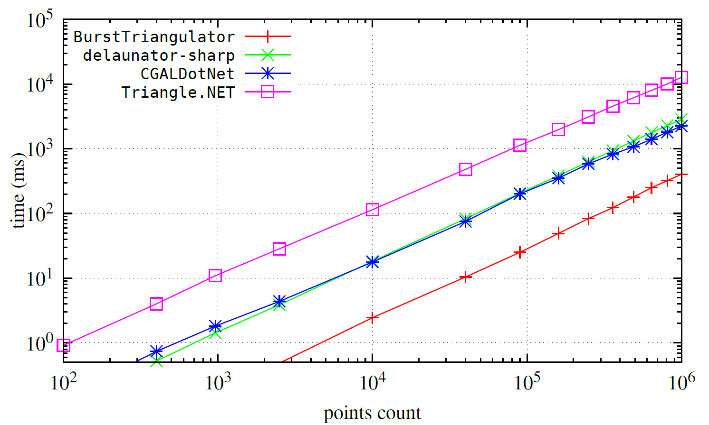

Benchmark
The package utilizes the Burst compiler, which generates highly optimized native code using LLVM.
Other packages
Below, you'll find a performance comparison for classic Delaunay triangulation (without refinement or constraints). between this package and a few alternatives:

Delaunay triangulation
Below, you'll find a performance comparison (with Burst enabled) between v2.0, v2.1, and v3.0 for classic Delaunay triangulation (without refinement or constraints).
The presented result is for T2 = float2.

Contrained triangulation
Below, you can find a benchmark for constrained triangulation for v2.1, v2.2, and v3.0. The test specimen consists of a 100×100 grid with additional #constraints-points distributed in a circle at the center of the grid. In some cases of v2.1, the algorithm gets stuck.
Reference timings for non-constrained triangulation for v2.2 and v3.0 are marked with a dashed line.
In the figure below, you can also see example test cases: red represents resulting triangles, and blue represents constrained edges.
The presented result is for T2 = float2.

Delaunay triangulation with mesh refinement
Furthermore, we present a performance comparison (with Burst enabled) between v1.0, v2.0, v2.3, v2.4, and v3.0 for the refinement task.
The presented result is for T2 = float2.

Note
Since v2.4, the triangulation refinement algorithm has been updated, resulting in improved mesh quality.
Generic coordinates
Below, one can see the benchmark for generic coordinates for Delaunay triangulation.
float2 seems to be slightly faster than double2, however, any significant difference is noticeable only for very large inputs.